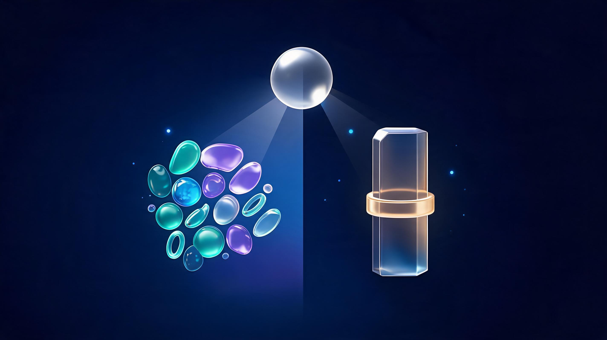
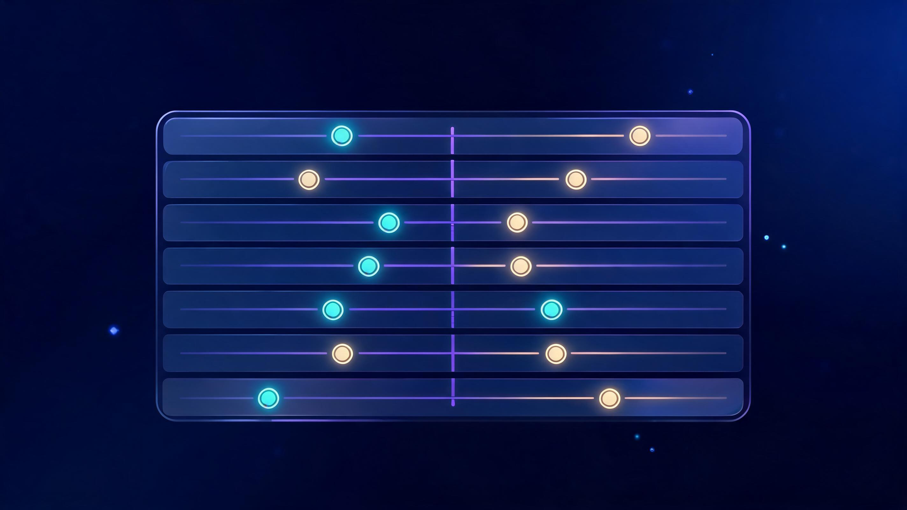

Android vs iPhone in 2026: Which One Should You Actually Buy?

Android vs iPhone is the biggest phone debate on the internet - around 135,000 searches every month in 2026 - and this year it genuinely changed shape. The iPhone 17 drove a 26% sales surge while Android flagships got more expensive, Apple and Google spent the year shipping dueling AI assistants, and Apple's most foldable-curious launch slipped into 2027. This guide settles it the honest way: category-by-category scorecards where both sides win, the freshest sales data, a switching guide, and a 3-profile verdict that tells you exactly which phone fits you.
🔄 Last updated October 18, 2026: includes the Q2/Q3 2026 sales data (Counterpoint), the Mashable bloatware study, the Siri-AI vs Gemini hands-on results, and the iPhone Duo delay news.
Quick answer
Neither wins overall - they optimize for different people. iPhone wins ecosystem, long-term updates (5-7 years), resale value and video quality. Android wins hardware variety, customization, value at most prices and foldables. In 2026 the AI assistant war (Siri-AI vs Gemini) became the newest deciding factor, and the iPhone 17 sales surge + Android price hikes shifted the value math. The 3-profile verdict near the end gives you a specific answer in 30 seconds.
In this guide
What Changed in 2026: The Shakeup Nobody Predicted
For a decade this debate ran on autopilot: Android had variety, iPhone had polish. Three things this year actually moved the needle.
The iPhone 17 sales surge
Q2 2026 data from Counterpoint Research showed global smartphone sales declining 11% year-over-year - while the iPhone 17 family led global sales and Pro Max models drove a 26% global sales surge for Apple. TechRepublic's coverage put the iPhone 17 at the top of the global top-10, and the "iPhone sales up, Android tumbling" headlines kept coming through May.
Android's price-hike problem
The same coverage flagged the uncomfortable cause: Android flagships got significantly more expensive in 2026, which boosted Apple's value perception without Apple changing a thing. The $500-Android-beats-$500-iPhone argument still holds at mid-range - but at flagship prices, the gap that used to justify "same money, more phone" narrowed.
The iPhone Duo delay
Apple's most aggressive foldable-curious launch, the iPhone Duo, saw pre-orders slip into 2027 - and Android's foldable ecosystem immediately became the only foldable show in town. If foldables were your reason to wait for Apple, the wait just got longer.
The bloatware spotlight
Mashable ran a pre-installed-apps privacy comparison that found Android phones - depending on the manufacturer - ship with far more uninstallable bloatware than iPhones. It is the cleanest recent illustration of Android's fragmentation tax: the platform's openness cuts both ways.
The AI War Changed Everything
The freshest reason this debate is different in 2026: your phone's assistant finally matters. All year, Apple and Google traded blows - Google racing to put Gemini at the center of Android before Apple's AI reboot, Apple answering at WWDC with a rebuilt Siri that surprised skeptics, and the hands-on comparisons landing one after another.
The results were more interesting than either camp's marketing: TechRadar's reviewer found Apple "actually understands what most people want" from an assistant; AndroidAuthority's 48-hour test came away genuinely impressed by Siri-AI; and howtogeek even found the iPhone's Gemini integration outshining Google's own Pixel. The punchline: the AI gap between platforms has collapsed into a two-horse race, and your choice is less locked-in than ever.

Category Scorecards: 8 Duels, Both Sides Win Some
Here is the honest 2026 scoreboard. No platform sweeps it - and anyone telling you otherwise is selling something.
| Category | Winner | Why |
|---|---|---|
| Design & hardware variety | Android | Dozens of shapes, sizes, foldables, materials - Apple ships a handful of slabs |
| Camera stills | Tie (per-model) | Pixel and Galaxy trade blows with iPhone shot-for-shot; tier depends on price |
| Video capture | iPhone | Consistent color, stabilization and cinematic modes across the lineup |
| AI features | Tie (2026) | Siri-AI and Gemini both became genuinely useful; integration style differs |
| Software updates | iPhone | 5-7 years of full iOS updates; most Android flagships now promise 4-7, delivery varies |
| Ecosystem sync | iPhone | Mac, iPad, Watch, AirDrop, iMessage - the integration is still unmatched |
| Privacy & bloatware | iPhone | Minimal pre-installed cruft; Android varies by manufacturer (Mashable study) |
| Customization | Android | Launchers, sideloading, default apps, file system - still not close |
| Price & value | Android | Better hardware-per-dollar at most prices below flagship; foldable options |
| Resale value | iPhone | iPhones hold value dramatically longer on the used market |
Where Android Genuinely Wins
Hardware choice. Foldables, stylus phones, compact flagships, rugged bricks, cameras with 10x periscopes - Android has a phone for nearly any preference, from any of a dozen manufacturers. Apple's lineup is excellent but narrow.
Value at most prices. A $500 Android consistently beats what $500 buys in Apple's lineup - higher refresh displays, bigger batteries, more RAM. The 2026 price hikes dented flagship value, but mid-range Android still wins on specs-per-dollar.
Customization and freedom. Launchers, sideloading, default-app control, real file management, automation depth (Tasker-class tools have no iOS equal). If you want your phone to behave exactly the way you decide, Android is the only option.
Right now, foldables. With the iPhone Duo delayed to 2027, Samsung, Google and Motorola own the entire foldable market - if a phone that opens into a tablet is your dream, there is nothing to wait for on the Apple side.
Where iPhone Genuinely Wins
The ecosystem. If you own a Mac or iPad, the iPhone's AirDrop, iMessage, Handoff and Watch integration is the smoothest multi-device experience in consumer tech. No Android manufacturer has matched the seamlessness.
Long-term updates. Five to seven years of full iOS support means a 2026 iPhone is still getting features in 2031. Android flagships have improved to 4-7 year promises, but delivery consistency varies by brand and region.
Video and resale. For creators, iPhone video remains the consistent default. And when you sell, iPhones recoup dramatically more value - which quietly lowers their true cost of ownership.
Consistency. Apps launch the same way, updates arrive day one worldwide, and there is no bloatware lottery. The Mashable study is the latest reminder that Android's openness has a pre-installed cost.
Switching From Android to iPhone (and Back)
The switching cluster is one of the fastest-growing parts of this debate, and the honest answer is: the friction is lower than the tribal wars suggest. Apple's Move to iOS app transfers contacts, messages, photos and calendar during setup, and even suggests iOS replacements for your Android apps.
What actually trips people up, per the 2026 switch-stories: paid Android apps do not transfer, WhatsApp-history migration needs a explicit step, and the first two weeks of muscle-memory rewiring feel genuinely awkward. AndroidAuthority's October switch-test to the iPhone 18 Pro Max found the biggest adjustments were customization loss and notification handling - not dealbreakers, but real.
Going back the other way is easier than it has ever been: Google's transfer tooling, Samsung Smart Switch and cloud-first apps mean your data follows you. The rational frame: switching costs are a weekend, not a lifestyle - and trying the other side is cheaper than ever.
What the Numbers Say
The global picture in 2026 is a tale of two markets: Android rules the world, iOS owns the West. Android's global share sits far above iOS because of Asia, Africa and Latin America - but in the US, UK, Japan and Australia, iPhone is dominant, and in US teen surveys it is not close.
The revenue picture is even more lopsided: the iPhone takes the majority of global smartphone profits despite holding a minority of unit share. And the 2026 Q2-Q3 sales data showed the iPhone 17 topping global charts as the overall market shrank - strength concentrated at the top.
On the eternal "do billionaires use iPhone or Android" question - the honest answer is that no reliable data exists, US professional-class surveys skew iPhone, global wealth skews Android for the simple reason that most of the world runs Android. Anyone selling a phone-as-status-statistic is selling a story.
The 3-Profile Verdict
Profile 1 - The ecosystem-locked professional. You own a Mac or iPad, you value iMessage and AirDrop, you keep phones 4+ years. Buy the iPhone. The ecosystem integration and update longevity will pay you back every single day, and resale softens the cost.
Profile 2 - The value-driven realist. You want the most phone for your money, you like customizing, and you upgrade every 2-3 years. Buy an Android. Mid-range and flagship-killer Android devices deliver more hardware per dollar, and the customization depth actually matters in daily use.
Profile 3 - The AI-first early adopter. You want the smartest assistant and the newest form factors. It depends on which AI you believe in: Gemini-on-Android is the most aggressively iterated assistant; Siri-AI on the newest iPhones is the platform surprise of 2026. Try both in a store - the AI gap is narrow enough that hardware preference should break the tie (foldables lean Android).
The meta-verdict: this debate is healthier than it has been in years precisely because neither side runs away with it. Buy for your workflows, not your tribe.
FAQs
Is an iPhone better than an Android?
Neither is objectively better. iPhone wins ecosystem, updates, resale and video; Android wins variety, customization, value and foldables. The scorecards above give the category-by-category picture.
Do billionaires use iPhone or Android?
No reliable data exists. US professional surveys skew iPhone; most of the world's wealth lives where Android dominates. It is a status story, not a data point.
Is it easy to switch from Android to iPhone?
Yes - the Move to iOS app handles contacts, messages, photos and calendar in one afternoon. Paid apps and some messaging quirks are the real friction.
Will I regret switching to iPhone from Android?
Only if you depend on Android-only workflows like deep customization or sideloading. The regret window, per 2026 switch-stories, is about two weeks.
Is the iPhone an Android phone?
No - the iPhone runs iOS, Apple's own operating system and Android's direct competitor. They share no apps, app stores or update systems.
Which is better for gaming, iPhone or Android?
Flagship iPhones edge it on sustained performance and launch-day optimization; top Android flagships close the gap with better displays and cooling. Mid-range Android varies widely.
Should I buy an iPhone or an Android in 2026?
iPhone for ecosystem, longevity and resale; Android for value, variety and freedom. The 3-profile verdict above gives a specific answer for your situation.
Who is better, iPhone or Samsung?
They lead different categories: Samsung wins displays, variety and foldables; iPhone wins ecosystem, updates and video. The 2026 flagship race is the closest in years.
Sources
Sources & References
- counterpointresearch.com - Global Smartphone Sales Share by OS (Q2 2026)
- techrepublic.com - iPhone 17 Leads Global Smartphone Sales (Sep 18, 2026)
- finance.biggo.com - iPhone 17 Pro Max Drives 26% Global Sales Surge (Apr 2026)
- 9to5google.com - iPhone Duo orders delayed into 2027 (Oct 16, 2026)
- mashable.com - iPhone vs Android on privacy-invasive bloatware (Oct 11, 2026)
- cnbc.com - Google races to put Gemini at the center of Android (May 12, 2026)
- techradar.com - Compared Siri AI to Gemini on Android (Sep 18, 2026)
- androidauthority.com - 48 hours comparing Siri AI to Gemini (Jun 16, 2026)
- androidauthority.com - Switched to iPhone 18 Pro Max for 3 weeks (Oct 15, 2026)
- sqmagazine.co.uk - Android Rules the World, iOS Owns the West (Feb 20, 2026)
Keep exploring Veritya Daily's AI coverage: see how the assistants compare in the ChatGPT for writing guide, understand what automation displaces in the three-jobs analysis, and check the workforce angle in the Scale AI layoffs verification.